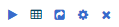

The Analytics page serves as a place to gain insights into the monitored traffic. The page is fully customizable and its settings are stored per user, this means that every user can customize the analytics page to display exactly the information they are interested in. There can be as many tabs with as many widgets on each tab as desired.
Toggle between the various open tabs using the tab names under the secondary navigation bar.
For each widget, the following options are available in the top-right corner:

These options are, in order from left to right:
The following options are available in the secondary navigation bar on this page:
Reloads the page.
Allows you to add a new tab or widget.
Add a new Tab
Several pre-made analytics template tabs are available when adding a new tab, including asset inventory, alert, security & management, and protocol or system-specific dashboards. These provide a starting point for gaining insight into multiple aspects of an industrial network and can, as any other analytics tab, be tailored to the network and setup. Changes made to a tab created from a template are not saved to the template, but are saved into the user preferences.
Add a new Widget
When adding a widget, the user needs to first select the desired data source. The analytics data in the "Flow information" data source are coming from the Visual Analytics module on each Sensor connected to the Command Center. Settings for this visual analytics module can be changed from the Manage Sensor page. The "Logged events" data source type is used for Network Logs as detected and reported by the Event Logging Module. Widgets using this data source require the Event Logging Module to be enabled. The "Asset inventory" and "Alerts" data sources, on the other hand, get data from the hosts and alerts database respectively, and do not require any specific module to be enabled.
Allows you to share the selected tab with its widgets between eyeInspect systems and users, or edit shared network analytics tabs.
If any tab was previously shared by a user, users will be able to use this tab as template by selecting "Shared tab" from the "Import" menu.
Allows you to set filters to each tab and widget. All filters applied to a widget will be applied with a logical AND with all filters on the tab hosting the widget. For example, if there is a filter "L7 Protocol equals MMS" on a widget and the filter "Source IP equals 10.1.1.25” is applied to the tab hosting the widget, the widget will show only information from packets originating from the host with IP address 10.1.1.25 which contain MMS data.
Widgets from different data sources offer different types of filtering capabilities, and when applying filters to the tab from the "Set tab filters" button in the sub menu, the filters specified for a certain data source will only be applied to the widgets of that data source. On the contrary, the time filter will be applied to all widgets in the tab. Widgets can be toggled to display a chart view or a table view of the content.
Allows you to import tabs and widgets from your local machine. It is possible to import a shared tab using this option.
Allows you to export the widgets of the selected tab to a CSV file to allow for custom analysis.
Allows you to set the widget timeout value in seconds. The loading timeout threshold was introduced In order to keep the page usable even in the presence of large amounts of data requiring a considerable amount of time to load. If loading data for a widget exceeds the timeout threshold, the query is interrupted and data for that widget is not displayed. If no timeout is desired, users can set the timeout value to 0. The new timeout threshold will be applied for that users to all widgets and tabs in the Network Analytics page.